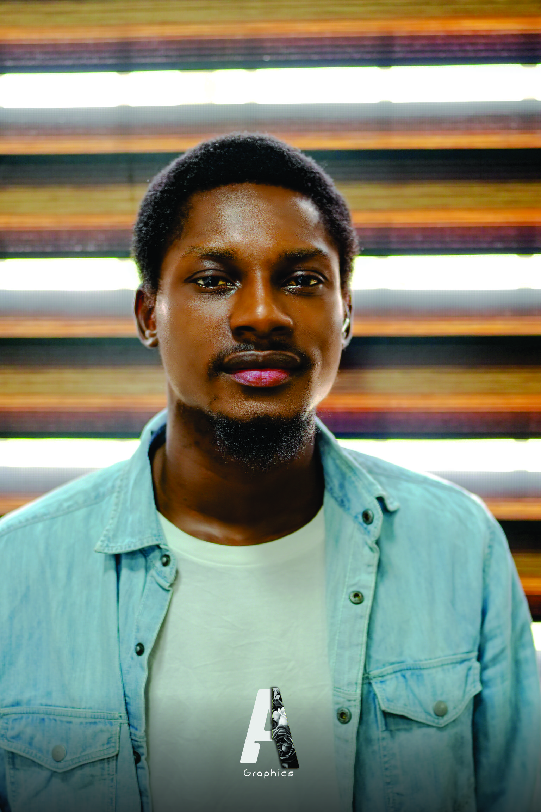

Edah Eyide Azariah | WDD 130
Hello my name is Edah Eyide Azariah, am from Warri, Delta State, Nigeria. Hello! I am a passionate graphic designer and product designer with a keen eye for detail and a love for all things creative. With a background in visual arts and design, I have honed my skills in creating visually stunning and impactful designs that resonate with audiences.In addition to my design work, I am also an aspiring web developer, constantly learning and expanding my knowledge in coding and web development. I am excited about the endless possibilities that the digital world offers and am eager to bring my design skills to the realm of web development.I believe in the power of good design to communicate ideas effectively and create memorable experiences for users. I am always seeking new challenges and opportunities to push myself creatively and continue to grow as a designer and developer. When I'm not designing or coding, you can find me exploring new art galleries, trying out new recipes in the kitchen, or hiking in the great outdoors. I am always looking for inspiration in the world around me and am constantly striving to create innovative and impactful designs that leave a lasting impression.